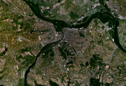

Geografija
Položaj i prostranstvo

Beograd se nalazi na 116,75 metara nadmorske visine, na koordinatama 44°49'14" severno i 20°27'44" istočno. Istorijsko jezgro Beograda (današnja Beogradska tvrđava) nalazi se na desnoj obali Save.U sastavu Beograda su Novi Beograd i Zemun koji su na levoj obali reke Save, pa time i u srednjoj Evropi. Grad leži na ušću Save u Dunav. Urbanizovana površina grada iznosi 359,92 kvadratnih kilometara. Beograd se nalazi na raskrsnici zapadne i istočne evropske kulture. Veliko ratno ostrvo je ada na Dunavu, locirana u opštini Zemun. Nalazi se na ušću Save u Dunav. Zbog velikog broja različitih ptičijih vrsta ostrvo je zaštićeno kao prirodni rezervat. Na severu ostrva se nalazi plaža Lido.
Klima
Beograd ima umerenu kontinentalnu klimu. Prosečna godišnja temperatura je 12,3 °C, dok je najtopliji mesec jul, sa prosečnom temperaturom od 21,8 °C, a najhladniji januar sa prosečnom temperaturom od 0,6 °C. Beograd u proseku ima oko 25 dana u godini sa temperaturom preko 30 °C. Prosečna godišnja količina padavina je oko 680 milimetara. Godišnje Beograd ima oko 2.025 sunčanih sati, sa julom i avgustom kao najsunčanijim, i decembrom i januarom kao najmračnijim danima, sa tek 2—2,3 sunčana sata dnevno.
О Beogradu
Ostalo
© Copyright 2018 MR